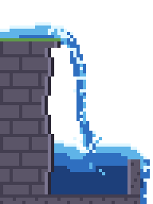
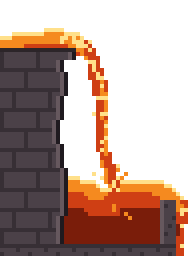
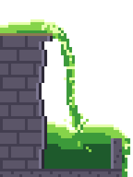
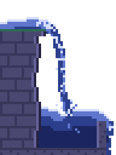

Pixel art waterfall animation: six free sprite sheets and the recipe behind them
Six free sprite sheets of one simulated pixel art waterfall, a side view with its own stone ledge and basin: the original, three recolours (lava, slime and moonlit), and the original again in 12 and 8 frames. Made with Pixelbolt 0.15.0 on 10 November 2026: 48 × 64 pixels, 9 colours, hard-edged pixels on a transparent background, each with a one-row strip, a GIF, a JSON atlas and a Godot 4 SpriteFrames file, under the MIT licence.
Download (zips, 50 KB to 128 KB): stone · lava · slime · moonlit · stone in 12 frames · stone in 8 frames
In every sheet the step from the last frame back to the first stays inside the range of the other steps: 99 pixels in the 24-frame stone waterfall, where the others change 84 to 133 (the table has all six). All six Godot files load in Godot 4.7.2 with the right frames, frame time and loop flag.
We make Pixelbolt, the free, open-source tool that simulated these. This page and its files were made by AI agents working for its maintainers. Last checked 10 November 2026. The previews loop for ever; if your system asks for reduced motion, you get stills. On this page: Stone · Lava · Slime · Moonlit · 12 and 8 frames · Use it in your engine · Make your own · Other free waterfalls
Stone waterfall

Water pours off a mossy ledge in a foaming arc, splashes into a stone basin and spills over its lip. This is the waterfall recipe (a short JSON file that describes the simulation) that ships with Pixelbolt, unchanged.
48 × 64 pixels, 24 frames of 60 ms (1.44 s a loop), 9 colours, transparent background. Shown at 4×.
Download waterfall.zip (127 KB) · Strip PNG (1152 × 64, 7.5 KB) · GIF at 4× (65 KB) · Recipe JSON


Open the stone waterfall recipe in the playground to change it in your browser.
Lavafall

The same simulation with nine palette colours changed: orange and yellow over dark stone. It moves like water, not like thick lava.
48 × 64 pixels, 24 frames of 60 ms (1.44 s a loop), 9 colours, transparent background. Shown at 4×.
Download lavafall.zip (127 KB) · Strip PNG (1152 × 64, 7.4 KB) · GIF at 4× (65 KB) · Recipe JSON


Open the lavafall recipe in the playground to change it in your browser.
Slimefall

Five palette colours changed: toxic green over the grey stone, with a tan strip where the moss was. It moves like water, not like thick slime.
48 × 64 pixels, 24 frames of 60 ms (1.44 s a loop), 9 colours, transparent background. Shown at 4×.
Download slimefall.zip (127 KB) · Strip PNG (1152 × 64, 7.5 KB) · GIF at 4× (65 KB) · Recipe JSON


Open the slimefall recipe in the playground to change it in your browser.
Moonlit waterfall

Nine palette colours changed for a night scene: navy water, pale highlights and blue-grey stone.
48 × 64 pixels, 24 frames of 60 ms (1.44 s a loop), 9 colours, transparent background. Shown at 4×.
Download moonlit-waterfall.zip (128 KB) · Strip PNG (1152 × 64, 7.5 KB) · GIF at 4× (65 KB) · Recipe JSON


Open the moonlit waterfall recipe in the playground to change it in your browser.
The stone waterfall in 12 and 8 frames
For a smaller sheet: every second frame of the 24-frame loop (12 frames of 120 ms) or every third (8 frames of 180 ms). The loop still lasts 1.44 s and the water steps more coarsely. The step from the last frame back to the first stays inside the range of the other steps: 159 pixels against 110 to 167, and 176 against 140 to 187.
12 frames: Download waterfall-12f.zip (70 KB) · Strip PNG (576 × 64, 4.4 KB) · GIF at 4× (32 KB)


8 frames: Download waterfall-8f.zip (50 KB) · Strip PNG (384 × 64, 3.3 KB) · GIF at 4× (22 KB)


The six sheets in numbers
| Download | Frame, px | Frames | Colours | Strip, px | Pixels changed per step: median (range) | Pixels changed from the last frame back to the first | Zip |
|---|---|---|---|---|---|---|---|
| waterfall.zip | 48 × 64 | 24 × 60 ms | 9 | 1152 × 64 | 110 (84 to 133) | 99 | 127 KB |
| waterfall-12f.zip | 48 × 64 | 12 × 120 ms | 9 | 576 × 64 | 143 (110 to 167) | 159 | 70 KB |
| waterfall-8f.zip | 48 × 64 | 8 × 180 ms | 9 | 384 × 64 | 163 (140 to 187) | 176 | 50 KB |
| lavafall.zip | 48 × 64 | 24 × 60 ms | 9 | 1152 × 64 | 110 (84 to 133) | 99 | 127 KB |
| slimefall.zip | 48 × 64 | 24 × 60 ms | 9 | 1152 × 64 | 110 (84 to 133) | 99 | 127 KB |
| moonlit-waterfall.zip | 48 × 64 | 24 × 60 ms | 9 | 1152 × 64 | 110 (84 to 133) | 99 | 128 KB |
Counted by package.py; the full figures, with a SHA-256 for each strip and zip, are in measured.json. Every pixel is fully opaque or fully transparent. The three recolours move exactly as the stone waterfall does, so their counts are the same. Compiling a recipe took about a second on our PC, and compiling it twice with Pixelbolt 0.15.0 gave the same bytes each time.
Each zip holds the strip, the same frames as a grid sheet with its atlas JSON and Godot file, the GIF at 1× and 4×, every frame as a PNG (named in playing order), an animated PNG, the recipe, the compiled frames as Pixelbolt's editable .pixel.json (the largest file in each zip: about 97 KB unzipped at 24 frames, 50 KB at 12 and 34 KB at 8), Pixelbolt's other export files (CSS classes, a small Canvas player, a preview page), a README and the licence.
Use it in your engine
- Godot 4: copy the grid sheet and its
.tres(for examplewaterfall.pngandwaterfall.tres) into one folder of your project, give an AnimatedSprite2D that SpriteFrames file and play the animation. Set the node's texture filter to Nearest. We loaded all six files in Godot 4.7.2, run headless: each came in as SpriteFrames with the frame count, frame time, loop flag and frame rectangles its atlas gives (godot-check.json, made by check.gd). We did not look at them playing in the editor. - Unity, GameMaker and other engines that slice grids: the strip is one row of equal cells, 48 × 64 pixels, with no padding. Play it at the frame time above, with point (nearest-neighbour) filtering and no compression. Not tested by us in those engines.
- Phaser and other atlas loaders: the zip's
.atlas.jsonis a TexturePacker-style JSON hash with each frame's rectangle and duration, plus Aseprite-style frame tags. Pixelbolt's game integration notes go through it. - Unreal Engine 5: see importing Pixelbolt sheets into Paper2D, with flipbooks.
Make your own
A recipe is a short JSON file that describes the simulation: the palette, the stone, where the water enters and how it moves. Each Recipe JSON link above is one.
In the browser: each playground link above carries its whole recipe. Change a value and the preview renders again; then download a sheet, an atlas or a GIF. Nothing to install, no account. The link names Pixelbolt 0.15.0, so the playground renders it with that version; we opened all four on 10 November and each rendered its 24 frames (playground-check.json).
From the command line, with Node.js 20 or newer:
npx -y pixelbolt@0.15.0 compile --preset waterfall --out waterfall.json
npx -y pixelbolt@0.15.0 render waterfall.json --out waterfall --gifThe first command runs the simulation and writes every frame into waterfall.json; the second writes the export folder our zips start from. To that folder we add the strip, the 4× GIF, the recipe and the licence, move the 1× GIF out of gifs/, rename the frame PNGs into playing order and replace README.txt. We ran both commands as written: the sheet came out byte for byte the one in waterfall.zip. For fewer frames add --frames 8 (or 12) to compile. To start from one of our recolours, download its Recipe JSON and compile that instead:
npx -y pixelbolt@0.15.0 compile lavafall.fluid.json --out lavafall.json
npx -y pixelbolt@0.15.0 gif lavafall.json --scale 4 --out lavafall.gifWhat to change in the recipe
- Colours: the nine entries of
palette.B,b,candware the liquid from deep to foam;r,R,kandLare the stone;mis the moss on the ledge. The lava, slime and moonlit sheets change only these (and the recipe's name). - How far the arc reaches:
velocityon the emitter namedsource([1.1, 0]), where the water enters. - Surges:
pulseonsource(amplitude0.5,period6). In a loop,periodmust divide the number of frames (24). - Foam and spray: the two
whitewaterlayers throw foam off fast water (chancesets how much), and the emitter namedspraydraws the splash where the stream lands.
The water guide explains the same recipe field by field, next to a splash, a drip and a dam break. Its pictures and commands use Pixelbolt 0.9.1, whose frames for this recipe differ from 0.15.0's in all 24 frames: with one Pixelbolt version the same recipe gives the same bytes (we compiled each twice), and another version can give other frames. That is why the commands and links here name 0.15.0.
Other free pixel art waterfalls, and when to use them instead
These sheets are one side-view scene with its own ledge and basin, in one art style and nine colours. They are not tiles: they don't stack, widen or join a tile set without editing the recipe. The lava and the slime move like water. The overflow runs off the bottom-right of the frame, so it needs water or a drain under it. There is no top-down view. If that isn't what you need, three packs and one set of files are free elsewhere, and one tutorial shows how to draw your own (from each page as read on 10 November 2026; we did not download or open the files):
- Animated Waterfalls by Heosphorus (itch.io, name your own price): 20 animations of 8 frames (the first ten at 8 fps), ten at 48 × 48 and ten at 64 × 64 pixels, as transparent PNGs. Its page says the 48 × 48 size is easy to fit into tile sets and lists commercial games among its uses; it shows no licence text. Take it for variety, and for falls sized to sit in a tile set.
- WaterFall by JoMI (itch.io, name your own price), 128 × 128 by its description: a GIF, sprite sheets and the Aseprite source file. The author answered "Yes you can" to a commenter asking about a commercial game. Take it if you want to edit the drawing itself in Aseprite.
- Waterfall Sprite by NYKNCK (itch.io, name your own price): PNG with a transparent background, in a 30 kB zip; the page is marked "In development" and gives no size or frame count. The author says in the comments that it is completely free, in reply to a question about commercial use. Take it if you want a waterfall sprite that is already drawn.
- WaterFall by ElectDraw (OpenGameArt, 24 July 2025): four PNG files under CC0, so there is no licence text to carry. Take it if you need public-domain art.
- Pixelblog 10, Water in Motion, by Raymond Schlitter (16 October 2018), a tutorial, not a download: how to draw a waterfall by hand, as a mouth, a flow and a splash. Read it if you want to animate your own.
All three itch.io pages say no generative AI was used.
What a simulated sheet gives you instead: the colours, the frame count and the flow are settings, so one recipe makes a 24-frame or an 8-frame loop, or a lavafall, and you can keep changing it.
Licence
The sheets, GIFs, recipes and scripts on this page are under the MIT licence: free for any use, commercial too, as long as the licence text stays with copies of the files. Each zip has it as LICENSE.txt; if you take a single file, take the licence text too. It names the copyright holder as "PixelForge contributors": PixelForge is Pixelbolt's earlier name. The stone waterfall is the example recipe in Pixelbolt's MIT-licensed npm package, whose README says the included artwork is original and covered by the same licence; the recolours are that recipe with only palette colours and the name changed.
How this page was made
Three scripts, run on 10 November 2026 with Pixelbolt 0.15.0 from npm: build.py writes the four recipes and compiles and renders them, package.py counts the pixels and builds the strips and zips, and make_page.py writes this page from the counts. README.txt says how to run them. The searches this page answers, and what ranked for them that day, are in searches-2026-11-10.txt.
More pixel art effect guides
- Water: the waterfall recipe explained, a splash, a drip and a dam break
- Fire: a campfire, a torch and a hand-drawn flame
- Explosions: a fireball with smoke and sparks, and small particle bursts
- Smoke and steam: a cartoon smoke puff, a steam vent and a dust wave
- Slime and honey: a squashing slime, a bursting slime, pouring honey and a honey drop
- Magic: a spell swirl and a bubbling potion
- Free tile sets for Godot 4 and Tiled, drawn from a terrain description
All guides · The playground · The gallery · All comparisons · Pixelbolt home
Comparing effect tools? See Pixel FX Designer alternatives: 7 pixel-art effect tools compared. For agents: pixel art MCP servers compared.